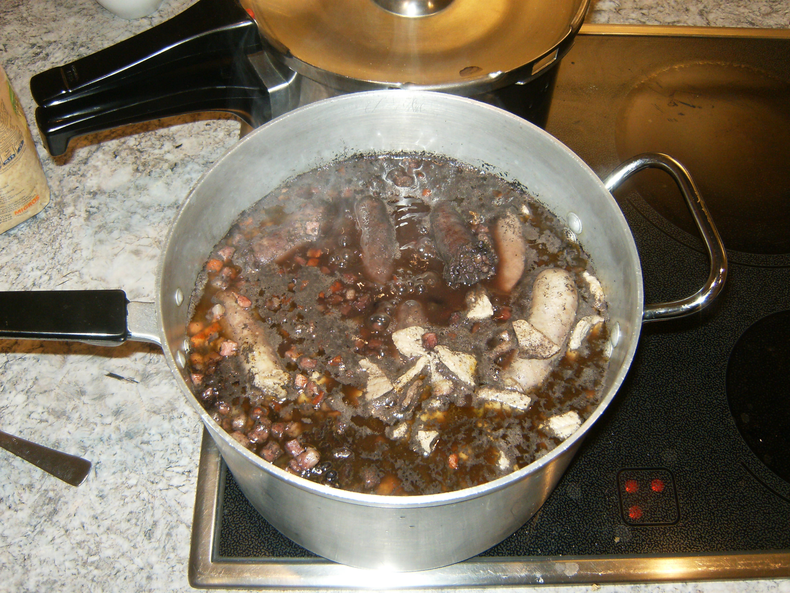

Cardápio digital do restaurante Comida de Vó, especializado em culinária regional brasileira.
| Prato | Preço |
|---|---|
| Feijoada completa | R$ 45,00 |
| Moqueca de peixe | R$ 52,00 |
| Baião de dois | R$ 38,00 |
Conheça mais sobre a história da feijoada na Wikipédia.
